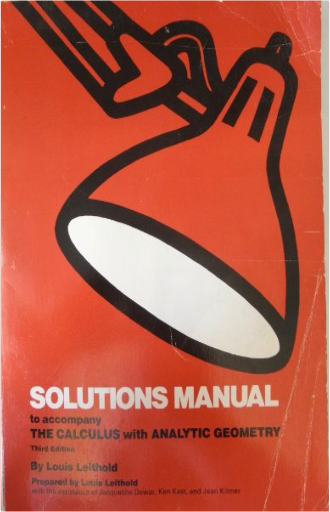
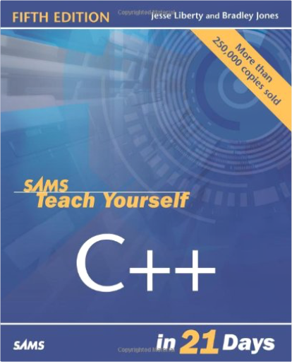
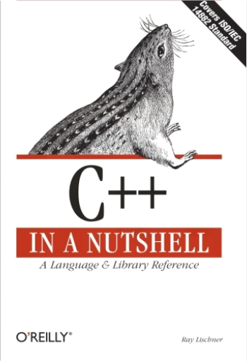
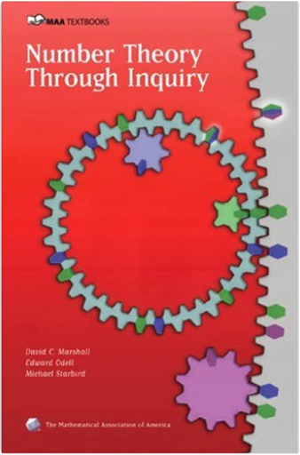

Coordination Models and Languages: 7th International Conference, COORDINATION 2005, Namur, Belgium, April 20-23, 2005, ProceedingsJean-Marie Jacquet, Gian Pietro Picco Coordination Models and Languages: 7th International Conference, COORDINATION 2005, Namur, Belgium, April 20-23, 2005, ProceedingsJean-Marie Jacquet, Gian Pietro Picco  Modern information systems rely increasingly on combining concurrent, d- tributed, mobile, recon?gurable and heterogenous components. New models, architectures, languages, and veri?cation techniques are therefore necessary to cope with the complexity induced by the demands of today's software devel- ment. Coordination languages have emerged as a successful approach, providing abstractions that cleanly separate behavior from communication and therefore increasing modularity, simplifying reasoning, and ultimately enhancing software development. This volume contains the proceedings of the 7th International Conference on Coordination Models and Languages (Coordination 2005), held at the Ins- tute of Informatics of the University of Namur, Belgium, on April 20-23, 2005. The previous conferences in this series took place in Cesena (Italy), Berlin (G- many),Amsterdam(TheNetherlands),Limassol(Cyprus),York(UK),andPisa (Italy). Building upon the success of these events, Coordination 2005 provided a forum for the community of researchers interested in models, languages, and implementation techniques for coordination and component-based software, as well as applications that exploit them. The conference attracted 88 submissions from authors all over the world.  An Engineering Approach to Computer Networking: ATM Networks, the Internet, and the Telephone NetworkSrinivasan Keshav An Engineering Approach to Computer Networking: ATM Networks, the Internet, and the Telephone NetworkSrinivasan Keshav This text provides an introduction to the inner workings of computer networks, employing an engineering approach that should help readers gain a grasp of not just how, but also why, networks work the way they do. The book features up-to-date network technology, including practical treatment of Asynchronous Transfer Mode (ATM). Computer Networking: A Top-Down ApproachJames F. Kurose, Keith W. Ross Building on the successful top-down approach of previous editions, the Fifth Edition of Computer Networking continues with an early emphasis on application-layer paradigms and application programming interfaces, encouraging a hands-on experience with protocols and networking concepts. With this edition, Kurose and Ross have revised and modernized treatment of some key chapters to integrate the most current and relevant networking technologies.  Computer Networking: A Top-Down Approach Featuring the InternetJames F. Kurose, Keith W. Ross, James Kurose, Keith Ross Computer Networking: A Top-Down Approach Featuring the InternetJames F. Kurose, Keith W. Ross, James Kurose, Keith Ross The most up-to-date introduction to the field of computer networking, this book's top-down approach starts at the application layer and works down the protocol stack. It also uses the Internet as the main example of networks. This all creates a book relevant to those interested in networking today. By starting at the application-layer and working down the protocol stack, this book provides a relevant introduction of important concepts. Based on the rationale that once a reader understands the applications of networks they can understand the network services needed to support these applications, this book takes a "top-down" approach that exposes readers first to a concrete application and then draws into some of the deeper issues surrounding networking. This book focuses on the Internet as opposed to addressing it as one of many computer network technologies, further motivating the study of the material. This book is designed for programmers who need to learn the fundamentals of computer networking. It also has extensive material making it of great interest to networking professionals.  Linear Algebra and Its Applications, 3rd Updated EditionDavid C. Lay Linear Algebra and Its Applications, 3rd Updated EditionDavid C. Lay Linear algebra is relatively easy for students during the early stages of the course, when the material is presented in a familiar, concrete setting. But when abstract concepts are introduced, students often hit a brick wall. Instructors seem to agree that certain concepts (such as linear independence, spanning, subspace, vector space, and linear transformations), are not easily understood, and require time to assimilate. Since they are fundamental to the study of linear algebra, students' understanding of these concepts is vital to their mastery of the subject. Lay introduces these concepts early in a familiar, concrete Rn setting, develops them gradually, and returns to them again and again throughout the text so that when discussed in the abstract, these concepts are more accessible. Solutions manual to accompany The calculus, with analytic geometry, 3d ed., by Louis LeitholdLouis Leithold  Fault Tolerant System DesignShem-Tov Levi, Ashok K. Agrawala Fault Tolerant System DesignShem-Tov Levi, Ashok K. Agrawala This book presents a comprehensive exploration of the practical issues, tested techniques, and accepted theory for developing fault tolerant systems. It is a ready reference to work already done in the field, with new approaches devised by the authors. The book covers each phase of fault tolerant design, including: hardware and software architecture incorporating OSI networking models; distributed system requirements and communication algorithms; fault tolerance mechanisms and exception handling; resource allocation and performance optimization; and much more. Sams Teach Yourself C++ in 21 DaysJesse Liberty, Bradley L. Jones Join the leagues of thousands of programmers and learn C++ from some of the best. The fifth edition of the best seller Sams Teach Yourself C++ in 21 Days, written by Jesse Liberty, a well-known C++ and C# programming manual author and Bradley L. Jones, manager for a number of high profiler developer websites, has been updated to the new ANSI/ISO C++ Standard. This is an excellent hands-on guide for the beginning programmer. Packed with examples of syntax and detailed analysis of code, fundamentals such as managing I/O, loops, arrays and creating C++ applications are all covered in the 21 easy-to-follow lessons. You will also be given access to a website that will provide you will all the source code examples developed in the book as a practice tool. C++ is the preferred language for millions of developers-make Sams Teach Yourself the preferred way to learn it! C++ in a NutshellRay Lischner To-the-point, authoritative, no-nonsense solutions have always been a trademark of O'Reilly books. The In a Nutshell books have earned a solid reputation in the field as the well-thumbed references that sit beside the knowledgeable developer's keyboard. C++ in a Nutshell lives up to the In a Nutshell promise. C++ in a Nutshell is a lean, focused reference that offers practical examples for the most important, most often used, aspects of C++.C++ in a Nutshell packs an enormous amount of information on C++ (and the many libraries used with it) in an indispensable quick reference for those who live in a deadline-driven world and need the facts but not the frills.The book's language reference is organized first by topic, followed by an alphabetical reference to the language's keywords, complete with syntax summaries and pointers to the topic references. The library reference is organized by header file, and each library chapter and class declaration presents the classes and types in alphabetical order, for easy lookup. Cross-references link related methods, classes, and other key features. This is an ideal resource for students as well as professional programmers.When you're programming, you need answers to questions about language syntax or parameters required by library routines quickly. What, for example, is the C++ syntax to define an alias for a namespace? Just how do you create and use an iterator to work with the contents of a standard library container? C++ in a Nutshell is a concise desktop reference that answers these questions, putting the full power of this flexible, adaptable (but somewhat difficult to master) language at every C++ programmer's fingertips.  Mastering Algorithms with C: Useful Techniques from Sorting to EncryptionKyle Loudon Mastering Algorithms with C: Useful Techniques from Sorting to EncryptionKyle Loudon There are many books on data structures and algorithms, including some with useful libraries of C functions. Mastering Algorithms with C offers you a unique combination of theoretical background and working code. With robust solutions for everyday programming tasks, this book avoids the abstract style of most classic data structures and algorithms texts, but still provides all of the information you need to understand the purpose and use of common programming techniques. Number Theory Through InquiryDavid C. Marshall, Edward Odell, Michael Starbird Number Theory Through Inquiry; is an innovative textbook that leads students on a carefully guided discovery of introductory number theory. The book has two equally significant goals. One goal is to help students develop mathematical thinking skills, particularly, theorem-proving skills. The other goal is to help students understand some of the wonderfully rich ideas in the mathematical study of numbers. This book is appropriate for a proof transitions course, for an independent study experience, or for a course designed as an introduction to abstract mathematics. Math or related majors, future teachers, and students or adults interested in exploring mathematical ideas on their own will enjoy ;Number Theory Through Inquiry.; Number theory is the perfect topic for an introduction-to-proofs course. Every college student is familiar with basic properties of numbers, and yet the exploration of those familiar numbers leads us to a rich landscape of ideas. Number Theory Through Inquiry contains a carefully arranged sequence of challenges that lead students to discover ideas about numbers and to discover methods of proof on their own. It is designed to be used with an instructional technique variously called guided discovery or Modified Moore Method or Inquiry Based Learning (IBL). Instructors materials explain the instructional method. This style of instruction gives students a totally different experience compared to a standard lecture course. Here is the effect of this experience: Students learn to think independently: they learn to depend on their own reasoning to determine right from wrong; and theydevelop the central, important ideas of introductory number theory on their own. From that experience, they learn that they can personally create important ideas. They develop an attitude of personal reliance and a sense that they can think effectively about difficult problems. These goals are fundamental to the educational enterprise within and beyond mathematics. Hacking Exposed: Network Security Secrets and Solutions, Sixth EditionStuart McClure, Joel Scambray, George Kurtz The world's bestselling computer security book—fully expanded and updated |
 Made with Delicious Library
Made with Delicious Library